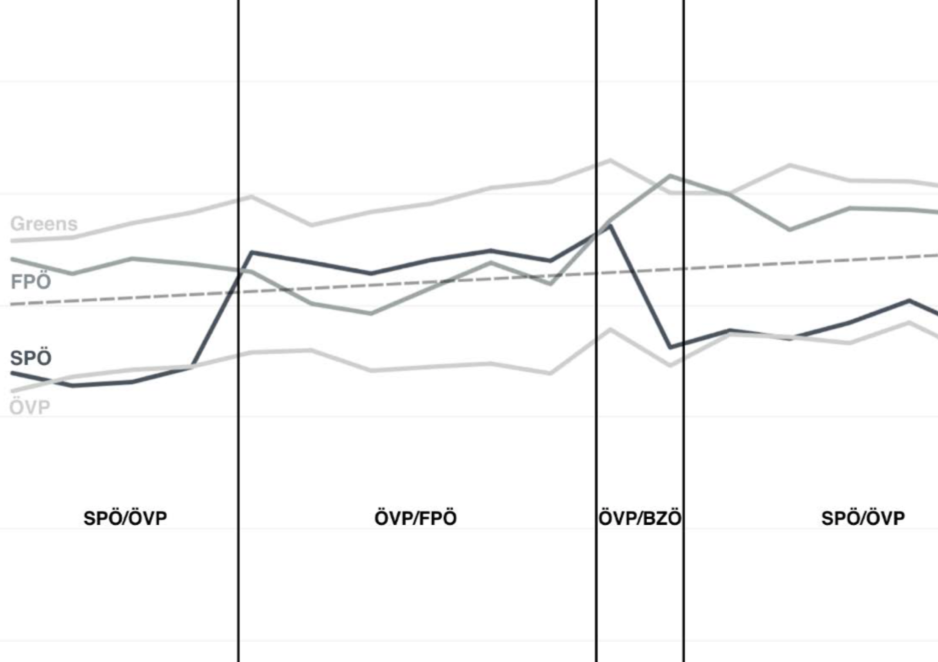

More than Bags of Words: Sentiment Analysis with Word Embeddings

Venue. CMM (2018)
Authors. Elena Rudkowsky, Martin Haselmayer, Matthias Wastian, Marcelo Jenny, Stefan Emrich, Michael Sedlmair
Abstract. Moving beyond the dominant bag-of-words approach to sentiment analysis we introduce an alternative procedure based on distributed word embeddings. The strength of word embeddings is the ability to capture similarities in word meaning. We use word embeddings as part of a supervised machine learning procedure which estimates levels of negativity in parliamentary speeches. The procedure’s accuracy is evaluated with crowdcoded training sentences; its external validity through a study of patterns of negativity in Austrian parliamentary speeches. The results show the potential of the word embeddings approach for sentiment analysis in the social sciences.